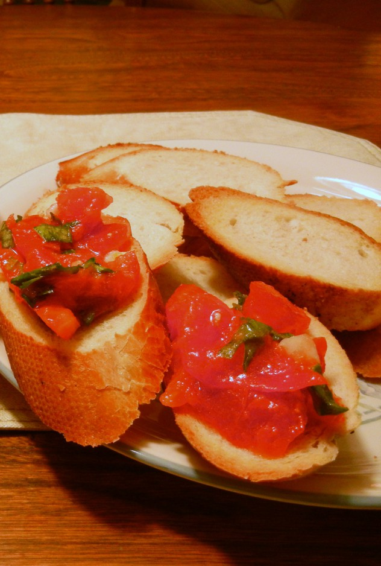

Tomato and Basil Bruschetta
Ingredients
- 4 ripe tomatoes
- 1 Tbsp shredded basil
- salt and pepper to taste
- 2 tsps extra virgin olive oil
- 1 garlic clove, chopped
- 4 pieces bread, ciabatta, baguette
Directions
- Grill, broil or toast the bread until crisp.
- Roughly chop the tomatoes and mix with the basil, olive oil and garlic.
- Season well and pile onto toasted bread